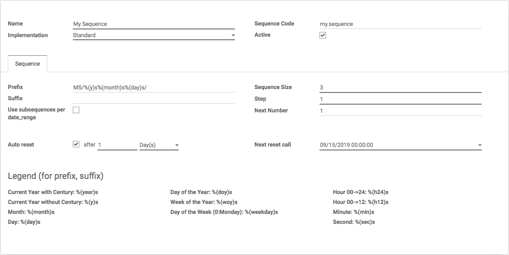

<section class="oe_container">
    <div class="oe_row oe_spaced">
        <h2 class="oe_slogan" style="color:#875A7B;">Auto reset your sequences</h2>
        <div class="oe_span6">
            <div class="oe_demo oe_picture oe_screenshot">
                
            </div>
        </div>
        <div class="oe_span6">
            <p class="oe_mt32">
                This module will let you configure your sequences to be reset automatically after every period of time: days, months or years...
            </p>
        </div>
    </div>
</section>